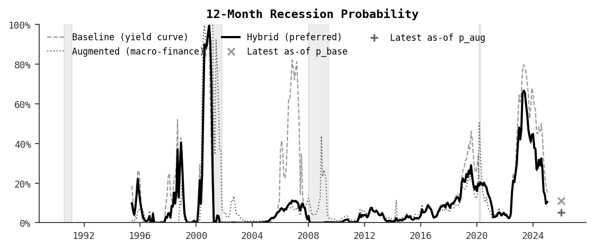
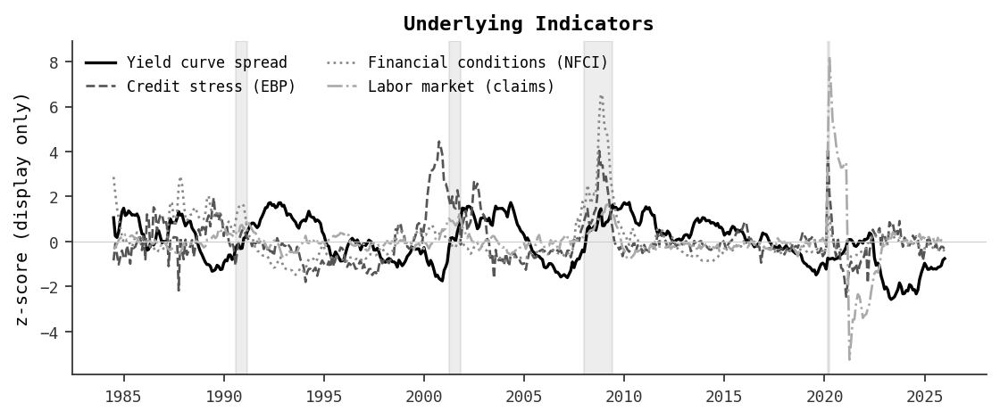
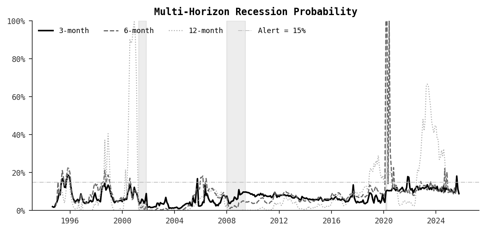

Overview What this dashboard is measuring
What you are looking at: a recession risk monitor that combines a classic yield-curve signal with broader measures of financial stress.
Why a “regime-aware” approach: the yield curve is historically useful, but in some periods it can send prolonged warnings without broad economic stress.
This system adapts by learning which logic has been more reliable out-of-sample.
Three parts: (1) a baseline yield-curve model, (2) an augmented macro-finance model using credit, financial conditions, and labor-market indicators,
and (3) a “reliability gate” (mixture weight w) that decides how much to trust each model at a given time.
Reading tip: start with the probability chart, then check the mixture weight panel to see which model is driving today’s reading.
Recession Probability How risk evolves over time
Why it matters: This chart is the main “risk thermometer.” It shows the system’s recession probability through time.
How to read: Higher values mean the model sees conditions that historically preceded recessions at this horizon.
Shaded bands mark past recessions. A rising line means risk is increasing; a falling line means risk is easing.
Important: A high probability does not mean a recession is guaranteed, and a low probability does not mean one is impossible.
This is a monitoring signal based on history, not a calendar prediction.
Latest update
As of 2026-01-01
7.1%
Elevated risk
12-month recession probability
Yield-curve model
11.0%
Macro-finance model
5.3%
Reliability weight (w)
0.69
Blending both models
Sensitivity (w ± 0.1):
7.6% → 6.5%
What this is: a monitoring probability derived from historical patterns in financial & macro data.
What this is not: a guarantee, a trading signal, or a prediction of exact recession timing.

Indicator Dashboard What inputs look like right now
What you are looking at: the four key inputs that feed the recession probability model, each shown as a standardized z-score so they can be compared on one chart.
How to read: When a line moves sharply upward, that indicator is signaling increased stress relative to its own history.
When all four lines are near zero or below, conditions are historically benign.
| Indicator | What it captures | Stress direction |
|---|
| Yield curve spread | Difference between long- and short-term Treasury rates | Lower (inverted) = more stress |
| Credit stress (EBP) | Excess bond premium — the risk appetite of corporate-bond investors | Higher = more stress |
| Financial conditions (NFCI) | Chicago Fed index of overall financial tightness | Higher = tighter conditions |
| Labor market (claims) | Initial unemployment claims signal relative to recent trend | Higher = deteriorating labor market |
Note: These z-scores are for display only and are not the values fed directly into the model. They help you see which parts of the economy are currently under stress.

Reliability Gate (Mixture Weight) Which model the system trusts right now
What this is: The reliability gate outputs w, the weight placed on the macro-finance model when forming the hybrid probability.
How to read: When w is near 0, the system is mostly trusting the yield curve. When w is near 1, it is mostly trusting credit and labor-market stress signals.
Why it helps: This is the “why” behind the blended probability—and it often explains why the system resists false alarms when the yield curve is inverted but broader stress is low.
0 = Yield curve
1 = Macro-finance
Current w: 0.69 • Blending both models

Short-term vs Medium-term View Multi-horizon overlay + historical warning behavior
Why it matters: This view separates medium-term vulnerability from near-term immediacy.
How to read: The system is estimated at multiple horizons:
12 months (watch), 6 months (alert), and 3 months (alarm).
It is normal to see medium-term risk rise before short-term risk does.
What to do with it: If the short-term (3–6 month) lines rise meaningfully, that suggests conditions are shifting toward
more immediate risk. If only the 12-month line is elevated, it can indicate vulnerability without imminence.
How early does each horizon tend to warn?
This summary comes from historical episodes and is meant to be easy to interpret.
| Horizon | How often it warned | Avg first threshold warning | Avg peak signal lead (when it warned) |
|---|
| 3m | 0% of episodes | n/a | n/a |
| 6m | 67% of episodes | 10.0 mo | 9.0 mo |
| 12m | 67% of episodes | 10.0 mo | 6.7 mo |
Plain-English meaning: “Warned” means the probability crossed an alert threshold before recession onset.
Leads are shown only for horizons that warned (crossed the threshold) in historical episodes.

Known Limitations What this model cannot do
Why this section exists: Transparency about model limitations is as important as
the headline probability. This system is useful, but it has structural blind spots that users should
understand before acting on its output.
1. Additive model cannot capture conditional effects
The system has two models: a baseline (yield-curve-only probit) and an augmented
(macro-finance) elastic-net logistic regression. The augmented model intentionally includes the yield-curve
spread alongside five macro features (credit stress, financial conditions, labor market). The design intent is
that the augmented model sees the curve in context—an inverted curve accompanied by high credit stress
should mean more than an inverted curve with calm macro conditions.
The limitation: elastic-net logistic regression is additive in log-odds:
log-odds = B0 + B1×SPREAD + B2×CREDIT_Z + B3×NFCI + …
There are no interaction terms. The coefficient B1×SPREAD contributes the same amount to the probability
whether credit stress is at +4.0 (2001 crisis) or −0.2 (2022 calm). When the spread reaches extreme
values (−1.2 to −1.7 in 2022–2023), the SPREAD term dominates the augmented model regardless
of what the other features say.
The reliability gate has the same limitation—it is also an additive logistic regression. It cannot
learn "trust the augmented model only when the spread and credit indicators agree." It can only learn
unconditional tendencies about each feature.
The result: when the inversion is moderate (−0.2 in early 2007), the five calm macro features outweigh
SPREAD inside the augmented model, the two models disagree, and the gate correctly suppresses the false alarm.
When the inversion is extreme (−1.5 in 2023), SPREAD overwhelms the other features inside the augmented
model, the two models converge (correlation rises from 22% to 83%), and the gate has nothing to suppress.
| Episode |
Spread |
Credit / NFCI / Labor |
p_base |
p_aug |
p_mix |
Outcome |
| 2007 H1 |
−0.23 (mild) |
All calm |
0.60 |
0.06 |
0.09 |
Gate suppresses — correct |
| 2000 H2 |
−0.42 |
Credit Z: +4.2 (extreme) |
0.87 |
0.96 |
0.92 |
Recession (2001) — correct |
| 2022–23 |
−1.20 (extreme) |
All calm (NFCI −0.22, Claims −0.02) |
0.65 |
0.50 |
0.51 |
No recession — false alarm |
Implication: The hybrid probability reached 0.67 during 2022–2023 with no recession.
No fixed alert threshold can resolve this—the issue is structural.
A future model revision could address this by adding interaction terms (SPREAD × CREDIT_Z, etc.)
to let the model learn that an inverted curve means less when macro conditions are benign,
or by using a model class that captures non-linear feature interactions.
2. Small sample size
The out-of-sample evaluation covers only 3 recession episodes (roughly 28 recession months
out of 356 total). Any statistical analysis of threshold selection, lead times, or calibration is
inherently limited by this sample. Results should be treated as suggestive, not definitive.
3. Alert threshold interpretation
The paper uses an illustrative threshold of 15% for the multi-horizon lead-time table and overlay chart.
Data-driven threshold analysis (precision curves, Youden's J, episode-conditional tests) was attempted but
proved uninformative: with only 3 episodes and a 7.9% base rate, no threshold achieves clean separation
between true and false alarms—especially given the structural issue above.
Recommendation: Treat the 15% threshold as a reporting convention, not a decision rule.
The probability level and direction matter more than whether it crosses a specific line.
4. What this system is not
This is a monitoring tool based on historical statistical relationships. It does not model causal mechanisms,
it cannot anticipate unprecedented shocks (e.g., a pandemic), and it should never be used as the sole basis
for financial decisions. It is one input among many.